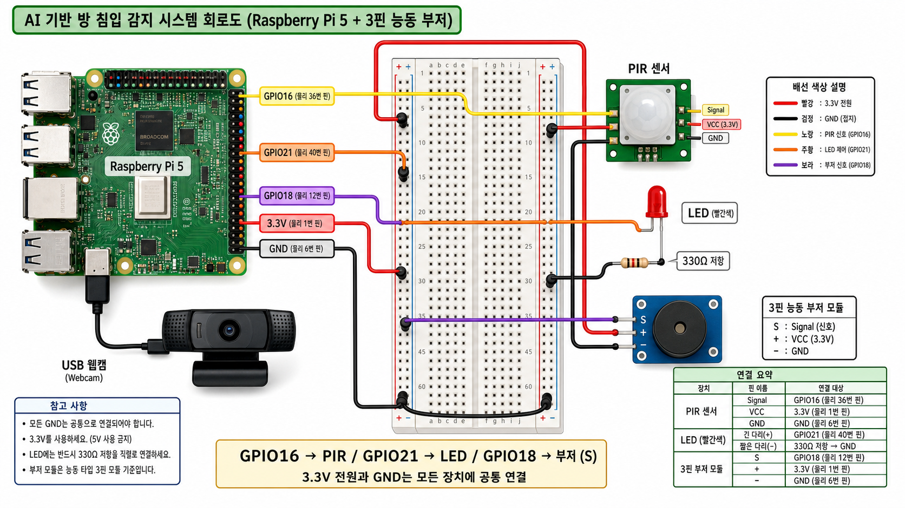

1. 초보자용 이미지 회로도
먼저 아래 그림처럼 큰 흐름을 보고 연결하면 된다. 색깔별 선의 의미는 빨강은 전원, 검정은 GND, 노랑은 PIR 신호, 주황은 LED 제어, 보라색은 3핀 부저의 S 신호선이다.

이미지 모델로 생성한 이해용 회로도이다. 실제 배선할 때는 아래의 핀 매핑 표와 배선 순서를 최종 기준으로 사용한다.
2. 상세 GPIO 핀 확인도
그림의 물리 핀 번호는 Raspberry Pi 40핀 헤더 기준이다.
Python 코드는 gpiozero의 BCM GPIO 번호를 사용하므로
GPIO 16, GPIO 21, GPIO 18을 코드에 그대로 둔다.
3. 핵심 핀 매핑
| 장치 | 코드 BCM GPIO | 물리 핀 | 연결 |
|---|---|---|---|
| PIR 센서 Signal | GPIO 16 |
36번 핀 | PIR의 S 또는 Signal |
| 빨간 LED | GPIO 21 |
40번 핀 | LED 긴 다리(+) |
| 3핀 능동부저 모듈 | GPIO 18 |
12번 핀 | 부저 S 또는 Signal 핀 |
| 3핀 능동부저 모듈 전원 | 3.3V | 1번 핀 | 부저 + 또는 VCC 핀 |
| PIR 전원 | 3.3V | 1번 핀 | PIR의 V 또는 VCC |
| 공통 GND | GND | 6번 또는 39번 핀 | PIR G, LED 저항 끝, 부저 - |
GPIO 16은 물리 16번 핀이 아니라 BCM GPIO 16이다.
실제 40핀 헤더에서는 물리 36번 핀에 꽂아야 한다.
4. 필요한 부품
- Raspberry Pi 4 또는 Raspberry Pi 5 1대
- 브레드보드 1개
- PIR 인체감지 센서 1개
- 빨간 LED 1개
- 330Ω 저항 1개
- 능동부저 1개
- USB 웹캠 1개
- 암/수 또는 수/수 점퍼 케이블
5. 배선 순서
- Raspberry Pi 전원을 완전히 끄고 전원 어댑터를 분리한다.
- 브레드보드의 한쪽 전원 레일을 GND 레일로 정한다.
- Raspberry Pi 물리 6번 또는 39번 GND 핀을 브레드보드 GND 레일에 연결한다.
- PIR 센서의
V또는VCC를 Raspberry Pi 물리 1번 3.3V 핀에 연결한다. - PIR 센서의
G또는GND를 브레드보드 GND 레일에 연결한다. - PIR 센서의
S또는Signal을 Raspberry Pi 물리 36번, 즉GPIO 16에 연결한다. - 빨간 LED의 긴 다리(+)를 Raspberry Pi 물리 40번, 즉
GPIO 21에 연결한다. - 빨간 LED의 짧은 다리(-)를 330Ω 저항 한쪽에 연결한다.
- 330Ω 저항의 반대쪽을 브레드보드 GND 레일에 연결한다.
- 3핀 능동부저 모듈의
S핀을 Raspberry Pi 물리 12번, 즉GPIO 18에 연결한다. - 3핀 능동부저 모듈의
+또는VCC핀을 Raspberry Pi 물리 1번, 즉3.3V에 연결한다. - 3핀 능동부저 모듈의
-핀을 브레드보드 GND 레일에 연결한다. - USB 웹캠을 Raspberry Pi USB 포트에 연결한다.
- 모든 배선을 다시 확인한 뒤 Raspberry Pi 전원을 켠다.
6. 장치별 연결 설명
PIR 센서
PIR 센서는 사람의 움직임이 감지되면 Signal 핀이 HIGH가 된다.
프로그램에서는 pir.value == 1을 움직임 감지로 판단한다.
빨간 LED
LED는 반드시 저항과 함께 사용한다. 이 회로에서는
GPIO 21 → LED 긴 다리 → LED 짧은 다리 → 330Ω 저항 → GND
순서로 전류가 흐른다.
3핀 능동부저 모듈
S는 신호 입력, +는 전원, -는 GND이다.
코드에서는 GPIO 18로 S 핀을 ON/OFF하여 부저를 울린다.
수동부저와 다르게 능동부저는 별도의 PWM 주파수 코드가 필요하지 않다.
7. 연결 전 점검표
- PIR
S가 물리 36번, 즉GPIO 16에 연결되었는가? - LED 긴 다리가 물리 40번, 즉
GPIO 21에 연결되었는가? - LED 짧은 다리가 330Ω 저항을 거쳐 GND로 연결되었는가?
- 3핀 부저의
S가 물리 12번, 즉GPIO 18에 연결되었는가? - 3핀 부저의
+가 물리 1번, 즉3.3V에 연결되었는가? - 3핀 부저의
-가 GND에 연결되었는가? - PIR, LED, 부저가 같은 GND 기준을 공유하는가?
- 웹캠이 Raspberry Pi에 연결되어 있고 카메라 방향이 문 쪽을 향하는가?
8. 회로 완성 후 실행 명령어
프로젝트 폴더에서 실제 하드웨어 모드로 실행한다.
cd ~/aiot_room_security
source .venv/bin/activate
export AIOT_MOCK_MODE=0
export TELEGRAM_BOT_TOKEN="BotFather에서_발급받은_token"
export TELEGRAM_CHAT_ID="확인한_chat_id"
python main.py
웹캠이 열리지 않으면 AIOT_CAMERA_INDEX=0을 추가로 설정한 뒤 다시 실행한다.
export AIOT_CAMERA_INDEX=0
python main.py9. 문제 해결
| 증상 | 확인할 것 |
|---|---|
| PIR이 계속 0이다 | Signal이 물리 36번인지 확인한다. PIR 센서는 전원 인가 후 안정화 시간이 필요할 수 있다. |
| LED가 켜지지 않는다 | LED 긴 다리와 짧은 다리 방향, 330Ω 저항, GND 연결을 확인한다. |
| 부저가 울리지 않는다 | 3핀 능동부저 모듈이면 S가 GPIO18, +가 3.3V, -가 GND인지 확인한다. |
| 웹캠 오류가 나온다 | USB 연결, 카메라 권한, AIOT_CAMERA_INDEX=0 설정을 확인한다. |
| 텔레그램이 오지 않는다 | 봇 token, chat_id, 인터넷 연결을 확인한다. 먼저 봇에게 아무 메시지나 보내야 chat_id를 받을 수 있다. |
10. 제출 보고서용 회로 설명 문장
본 회로는 PIR 인체감지 센서를 GPIO 16 입력으로 사용하고,
빨간 LED는 GPIO 21 출력으로 사용하고, 3핀 능동부저 모듈은 S 핀을 GPIO 18 출력으로 제어한다.
PIR 센서가 움직임을 감지하면 프로그램이 웹캠 프레임을 읽고 OpenCV DNN MobileNet SSD 모델로 사람을 판별한다.
사람이 감지되면 LED와 부저가 경고를 출력하며 텔레그램 알림과 CSV 로그가 함께 생성된다.
LED에는 330Ω 저항을 직렬로 연결하여 GPIO 핀과 LED를 보호하였다. 모든 장치는 같은 GND를 공유하도록 구성하여 센서 입력과 출력 제어의 기준 전압이 일치하도록 하였다.